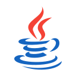

Java - строго типизированный язык программирования, использующийся для решения различных задач.
В момент разработки, язык назывался Oak и его основным предназначением было программирование бытовых приборов. Но из-за того, что такое название уже было занято, его переименовили в всеми известное название.
Основной чертой Java является конвертирование кода в байт-код, исполняемый JVM - виртуальной машиной. В языке существует несколько версий языка для разных платформ и задач:
Java SE (Standard Edition) - основная версия, содержащая API, различные компиляторы, подходящие для создания десктоп приложений и ОС.
Jakarta EE использующийся для создания ПО для предприятий и завод.
Java ME имеющий предназначение в устройствах, не способных выдавать большие мощности, например КПК и мобильные телефоны.
Java Card предоставляющий безопасность для приложений, работающих на смарт-картах и подобных гаджетов, имеющих максимально ограниченное количество памяти.
Swift - мультипарадигмальный язык для создания приложений на платформах macOS и IOS. Но также на нем можно писать и для Windows и Linux. Для работы с IOS существуют фреймворки Cocoa и Cocoa Touch. Компилятор использующийся для языка, работает на базе LLVM, из-за чего один код может быть скомпилирован на разных архитектурах. При разработке языка было много заимствований из Objective-C, но в отличии от него, его код определяется не указателями, а типа данных, использующихся в переменных. Также Swift позволяет работать с кодом написанном на C и том самом Objective-C в одном проекте.
Kotlin - статически типизированный, ООП язык программирования, работающий поверх JVM и создаваемый компанией JetBrains. Может компилироваться в JS и исполняемый код при помощи LLVM. Свое название получил в честь острова Котлин, находящийся в Финском Заливе. Перед разработчиками стояла цель создать язык, более типобезопасный, чем Java, и с более простым синтаксисом, чем Scala. Второе было реализовано посредством более быстрой компиляции. Kotlin всецело совместим с Java, что позволяет программистам неспеша перейти к его использованию. Синтаксис языка комбинирует в себе сразу две ветви языков: C++/Java и ML.
Dart - язык программирования, предназначенный для создания приложений и выступает в качестве альтернативы JavaScript. Также может использоваться и в веб-разработке. Первая информация о языке появилась в сентябре 2011 года, а уже в октябре того же года его презентовали на конференции Goto. При разработке перед программистами стояла задача создать гибкий язык с синтаксисом похожим на другие языки и высокой производительностью, использующийся для веб-программирования. Для исполнения кода было предложено использование виртуальной машины как у Javа, либо промежуточная трансляция, содержащаяся в JS.